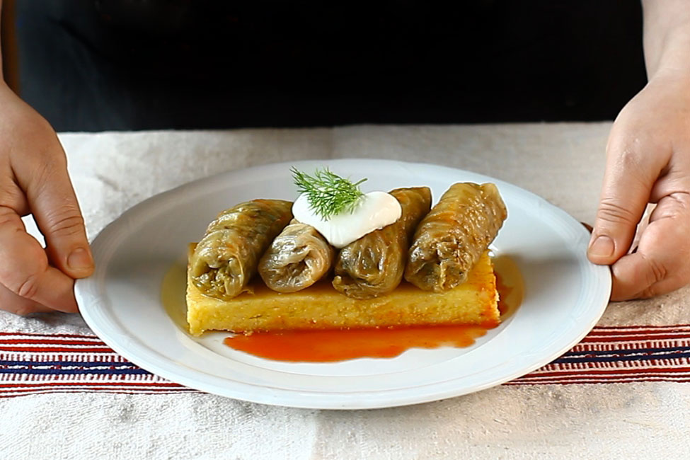

Home
Sarmale

- 1.5-2 kg sour cabbage (whole leaves)
- 1 kg grounded pork (for example pork shoulder)
- 200 grams onions
- 100 grams short-grain rice
- 2 tablespoons oil
- 150 ml lukewarm water
- 100 ml concentrated tomato paste / tomato puree
- Optional: smoked pork (pieces of knuckle, ribs, etc.)
- 1 tablespoon dried thyme (or 4-5 sprigs of fresh thyme)
- 1 large bunch fresh dill
- 1/2 tablespoon sweet paprika
- 1/2 tablespoon sweet paprika
- 1 teaspoon black pepper
- Salt to taste